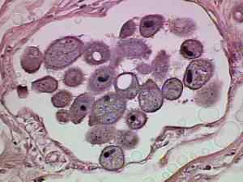
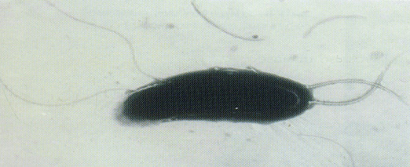
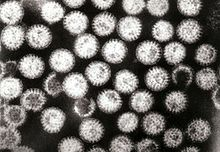

-

Stool
The solid waste that is left after food is digested.
Stool forms in the intestines and passes out of the body through the anus.
There are 3 types of stool:
1. lienteric stool feces
2. rice-water
3. silver stool feces
-

Rice-water
A semisynthetic antibiotic C43H58N4O12 that
is used especially in the treatment of tuberculosis
and to treat asymptomatic carriers of meningococci. -

Lienteric stool
A chemical which, when excreted into the urine,
has a local analgesic effect. It is often used to
alleviate the pain, irritation, discomfort, or urgency
caused by urinary tract infections, surgery,
or injury to the urinary tract.